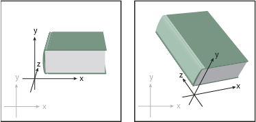

Set 3D rotation position options
 Do any of the following:
Do any of the following:-
Choose a preset position from the Position menu.
-
For unconstrained rotation, drag a track cube face. The front of the object is represented by the track cube’s blue face, the object’s top and bottom faces are light gray, the sides are medium gray, and the back face is dark gray.
-
To constrain the rotation along a global axis, hold down Shift while dragging horizontally (global y axis) or vertically (global x axis). To rotate the object around the global z axis, drag in the blue band that surrounds the track cube.
-
To constrain the rotation around an object axis, drag an edge on the track cube. The pointer changes to a double-sided arrow , and the cube edge changes color to identify the axis around which the object will rotate. Red edges represent the object’s x axis, green edges represent the object’s y axis, and blue edges represent the object’s z axis.
-
Enter values between –180 and 180 in the horizontal (x) axis , vertical (y) axis , and depth (z) axis text boxes.
-
To adjust the perspective, enter a value between 0 and 160 in the Perspective text box. A smaller lens angle is similar to a telephoto camera lens; a larger lens angle is similar to a wide-angle camera lens.
